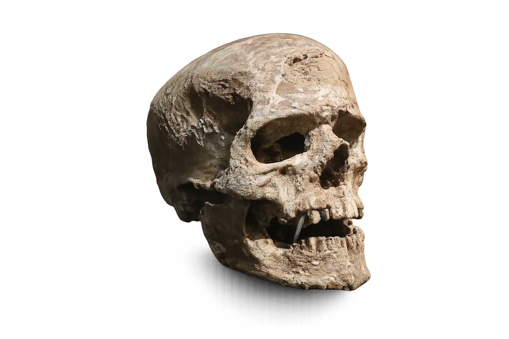

L'évolution
humaine
L'histoire humaine n'est pas une marche droite vers nous : c'est un buisson de lignées apparentées.
Ce qu'il faut garder en tête
Pas une seule ligne
Plusieurs espèces humaines ou proches de l'humain ont existé, parfois en même temps.
Des cousins, pas des étapes
Les fossiles ne sont pas forcément nos ancêtres directs : beaucoup sont des branches cousines.
Une mosaïque de caractères
Bipédie, cerveau, outils, langage et culture n'apparaissent pas tous d'un seul coup.
Le vrai buisson humain
Plusieurs espèces humaines ou proches de nous ont vécu avant nous, et certaines ont même coexisté avec Homo sapiens.
Homo sapiens

Environ 300 000 ans à aujourd'hui
Spécimens fossiles catalogués : non renseigné ici
Notre espèce, apparue en Afrique, se caractérise notamment par un crâne globulaire, un menton marqué et des cultures techniques et symboliques très diversifiées.